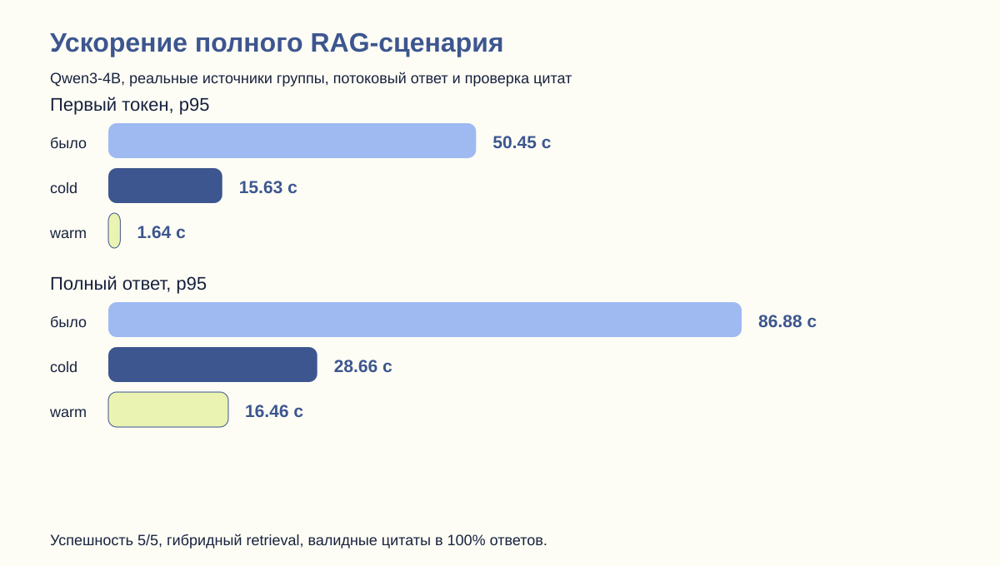
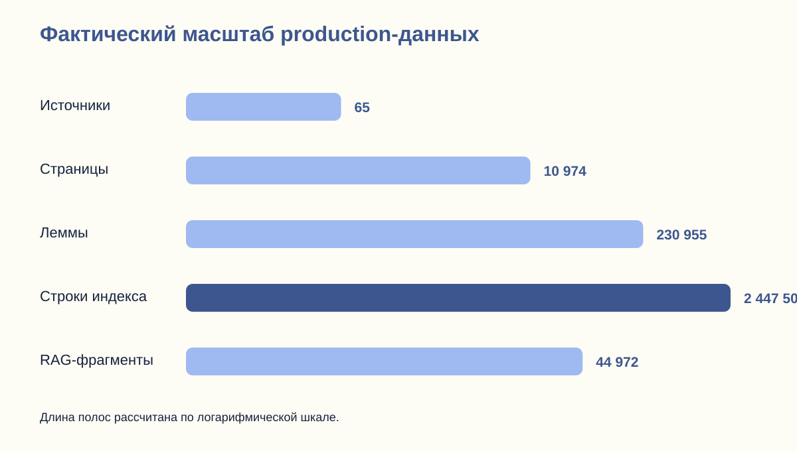
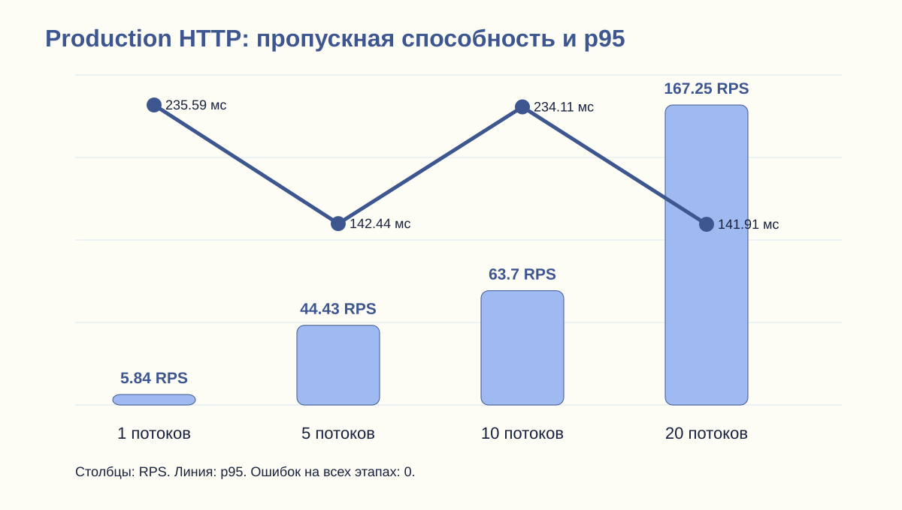
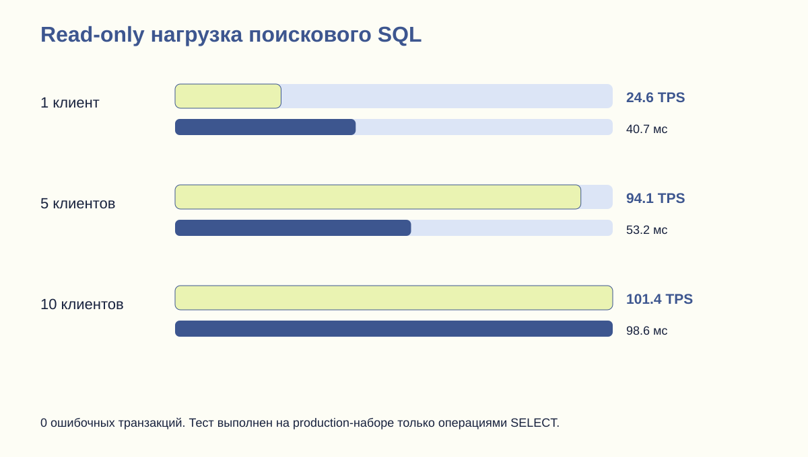

Комплексное тестирование научной поисковой системы с LLM
Реальный production, фактическая база и авторизованный RAG по источникам группы.
Полностью готово в пилотном профилеКлючевой результат
Ошибок в тестах, HTTP-нагрузке и SQL-нагрузке не обнаружено. Все пять ответов сформированы Qwen3-4B с гибридным retrieval и валидными ссылками.
При холодном кэше p95 первого токена снижен с 50,45 до 15,63 секунды, p95 полного ответа — с 86,88 до 28,66 секунды. В рабочем режиме после прогрева: 1,64 и 16,46 секунды соответственно. Список найденных источников отображается раньше, максимум через 2,25 секунды.
Покрытие критического кода
| Компонент | Строки |
|---|---|
| LLM/RAG package | 65,3% |
| LlmClient | 76,0% |
| EmbeddingClient | 84,6% |
| Тематический LLM-анализ | 92,8% |
| Метрики ассистента | 97,9% |
| Индексация документов | 63,9% |
| Авторизация | 55,9% |
| 84,2% |
Масштаб
65 источников, 10 974 страницы, 230 955 лемм, 2 447 508 строк обратного индекса и 44 972 векторных фрагмента.




Граница готовности
Вердикт относится к измеренному CPU-пилоту: один активный LLM-ответ. Для нескольких одновременных генераций с первым токеном быстрее 5 секунд нужен GPU или внешний OpenAI-совместимый API. Поиск, БД и web-контур такого ограничения не имеют в проверенном диапазоне.
Проверяемые файлы
Сводка JSON · Формальный протокол · Integration · RAG cold · RAG warm · Server probe · JUnit и JaCoCo